XENORRA
XENORRALAUNCH SUPPLY / XNR
44.18% of the proposed maximum supply.
XNR is the proposed native network asset. The current tokenomics plan specifies 72.9 billion XNR at launch and a maximum supply of 165 billion XNR. Of the 72.9 billion XNR launch supply, 17% (12.393 billion XNR) is proposed for the foundation; this is not an additional allocation on top of launch supply. Issuance and vesting mechanics are still being developed.
Project-provided planning figures distinguish launch supply from maximum supply. Staking reward rates, vesting and issuance timing are not yet finalized.

Planned initial XNR supply
Planned maximum XNR supply
Difference between launch supply and maximum; emission rules pending
The supply model is a project planning proposal. The protocol research draft does not itself establish these numerical limits, an issuance timetable or circulating supply.
XNR / ECONOMIC DESIGN
The project-supplied token plan distinguishes launch supply from maximum supply. The 92.1 billion XNR reserve is allocated in the token plan to future proof-of-stake rewards; exact reward curves, vesting and circulating-supply definitions still require formal publication.
44.18% of the proposed maximum supply.
55.82% of the maximum, reserved for staking and validator rewards; the emission schedule remains to be finalized.
Project-provided planning cap, not a figure established by the protocol research PDF.
The proposed foundation allocation is 17% of the 72.9B XNR launch supply (12.393B XNR), included within the launch supply—not 17% of the 165B maximum. Investor discussions are ongoing; no unconfirmed investor allocation or legal registration is presented as final.
The proposed network asset supports core protocol operations. No public-sale terms, exchange listings or launch dates are asserted here.
The protocol paper defines the economic framework but leaves its numerical parameters open. These supply figures are newer project-provided planning values, not figures fixed in the November 2026 specification.
Planned launch supply: 72.9 billion XNR. Planned maximum supply: 165 billion XNR. The remaining 92.1 billion XNR represents planned post-launch staking reward reserve, not tokens already circulating. The issuance schedule and circulating supply are not yet confirmed.
The protocol specification models issuance as a function of the bonded staking ratio. The 92.1 billion XNR reserve is planned for staking and validator incentives, within the proposed 165 billion XNR cap; reward rates, timing, and the precise emission schedule are not finalized. Xenorra does not specify proof-of-work mining.
The planned foundation allocation is 17% of the 72.9B XNR launch supply: 12.393B XNR. This is included in, not added to, the launch supply. The foundation is intended to be based in Liechtenstein; its registered legal name and address have not yet been confirmed. Vesting and other allocations remain to be specified.
Investor funding discussions are ongoing. No investor allocation, transaction, funding commitment, public-sale terms or mainnet launch date is confirmed.
The supply ceiling and launch amount are separate values. The difference is a potential issuance allowance, not a committed reward schedule.
72.9 billion divided by the 165 billion XNR maximum supply.
92.1 billion XNR reserved for staking and validator rewards; emission rules are not yet finalized.
Included within the 72.9B XNR launch supply (7.51% of the 165B maximum). Vesting, legal structure and governance terms remain to be finalized.
The foundation allocation is inside the launch supply—not an additional allocation and not a percentage of the maximum supply.
Proposed Xenorra Foundation allocation. This represents 7.51% of the 165B maximum supply; the other 83% of launch supply is 60.507B XNR.
These token amounts are project-provided planning figures. The research specification does not finalize emission rates, vesting, or the staking reward distribution schedule.